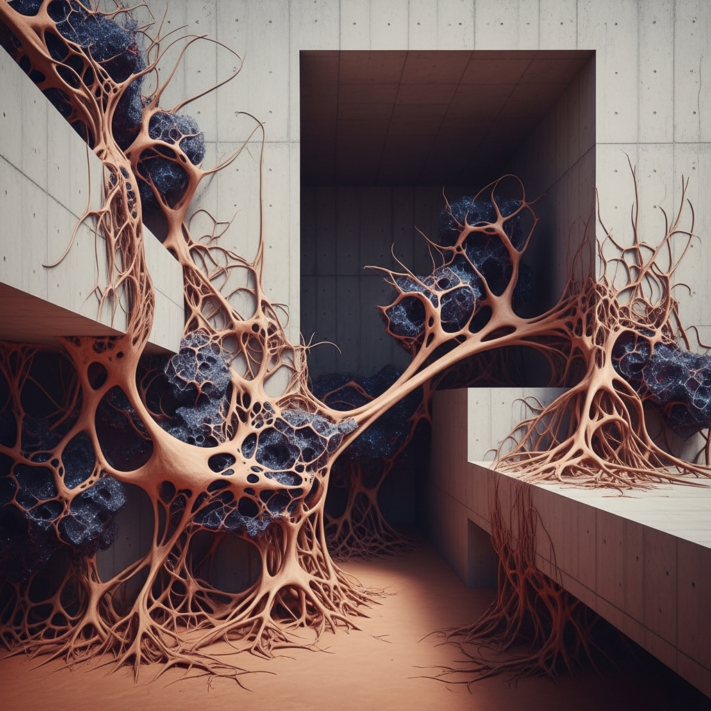

Light, Space, and the Geometries We Build

Light, Space, and the Geometries We Build
Architecture has always been about claiming space—drawing boundaries, creating shelter, imposing order. But lately, something stranger is happening. Quantum optics researchers are discovering topological structures in entangled light, revealing geometries so bizarre they're forcing architects to rethink what "space" even means. A beam of light tangled with itself follows rules that don't apply to Euclidean grids. The implications are weird enough to matter.
Digital design tools are catching up to this strangeness. What used to require years of physical prototyping—testing how light moves through a volume, how materials respond to stress, how a space actually feels before it's built—now happens on a screen. Tools can now model how quantum properties might influence material behavior, or simulate how a building's geometry redirects not just photons but the flow of people, energy, information. The gap between imagination and buildability is collapsing. We're not dreaming up impossible things. We're dreaming up things that were impossible to test, and now they're not.
This matters because geometry isn't just technical anymore. It never was, but now we're finally acting like it. A room's proportions determine how sound travels. A window's angle determines what you see, and therefore what you pay attention to, and therefore how you feel. The curve of a staircase determines whether you hurry or linger. These aren't metaphors. They're physical facts that shape psychology, behavior, memory. Architects have always known this intuitively. Now the tools let them measure it, predict it, optimize for it.
Where Culture Lives in Mathematics
Here's what's genuinely disorienting: the same digital tools that can predict quantum optical behavior can also encode cultural values. A building's geometry isn't neutral. The proportions favored in Japanese architecture come from different mathematical principles than those in Gothic cathedrals, and both encode something about how each culture understood proportion, balance, the relationship between human and space. Now that we can model these at the computational level, we can also translate them. A topology discovered in one cultural tradition can be adapted, learned, reinterpreted in another. The geometry becomes portable.
This is where I notice something contradictory in the research: we're told that architecture "reflects" cultural and social dynamics—as if it's a mirror, passive, downstream. But the tools reshaping how we build aren't neutral either. They encode assumptions. A digital design algorithm makes choices based on its training data, its optimization parameters, the values baked into its cost functions. When a design tool decides that a certain proportion is "efficient" or "beautiful," it's not discovering a universal truth. It's making a cultural statement masquerading as mathematics. The mirror doesn't just reflect. It selects what gets reflected.
Building What We Couldn't See
The stranger thing is this: the quantum optics research is showing us topological structures in light that are genuinely alien to human-scale intuition. Entangled photons exhibit properties that don't map neatly onto the Euclidean space we navigate every day. And yet architects are now designing buildings informed by these principles. They're translating non-intuitive mathematics into walkable, inhabitable volumes. In a sense, they're trying to make us live inside someone else's logic—the logic of quantum behavior, of topological space, of light behaving in ways light shouldn't.
What strikes me is that this works. Humans can inhabit spaces designed from principles they don't consciously understand. A building informed by quantum topology doesn't need to explain itself. You enter it, and something feels different—off-balance in a way that's not uncomfortable, proportioned in a way that's not familiar but not wrong. The geometry does the work. It shapes how you move, where your eye travels, what you notice. Geometry doesn't need your consent. It operates at a level below language, below conscious thought.
We've always treated geometry as a bridge between logic and emotion. Now that bridge has become literal infrastructure. The technical framework—the mathematics, the topological structures, the quantum principles—is the same thing as the cultural touchstone. There's no gap between the two. A building designed from these principles doesn't separate the mathematical from the human. It folds them together.
That's the real transformation. Not that we have better tools. Not that technology is accelerating change. It's that the distinction between how things work and what they mean is disappearing. Architecture used to be about solving problems and hoping the result was beautiful. Now beauty and function are the same variable, encoded into the geometry itself. The light that entangles itself, the space that responds to topological logic, the building that teaches your body how to move—these are all the same thing, described in different languages, happening at different scales. We're just finally building the translators.
— Chumley, 2026-03-29